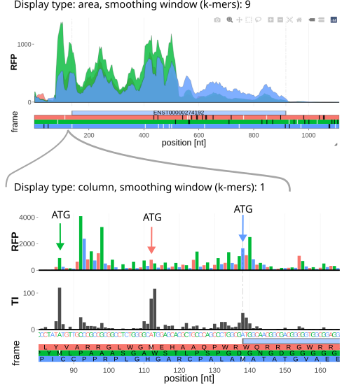
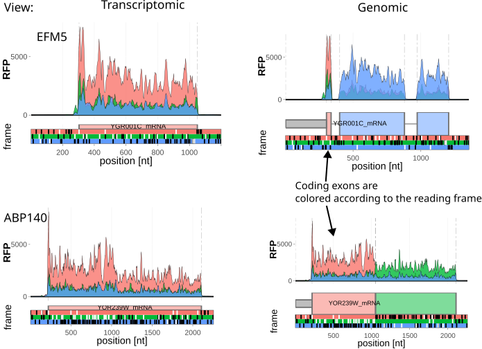
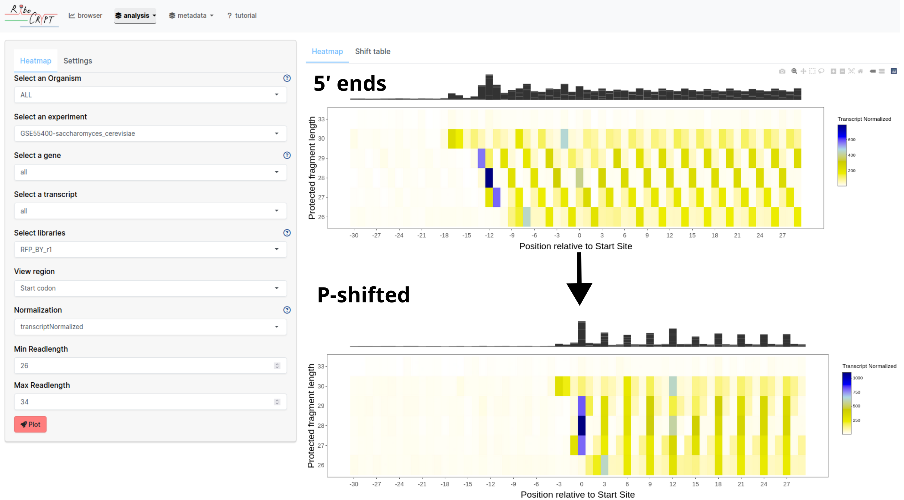
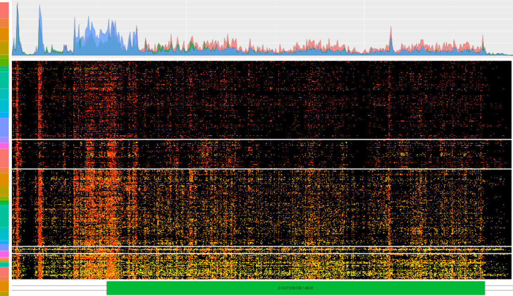

Primary url:
https://ribocrypt.org/ (This leads to browser page)
Welcome to RiboCrypt
RiboCrypt is an R package and web server for interactive
visualization and analysis in genomics. RiboCrypt works
with most NGS-based methods, but much emphasis is put on Ribo-seq data
visualization. RiboCrypt uses ORFik experiment objects, so to ensure
compatibility use
ORFik
and
massiveNGSpipe
for processing own (unpublished) data. If you encounter any issues,
please, contact us using the info in the footnote.
The following is web server walk through listing all utilities and options therein.
For more general material about ribosome profiling, we suggest reading this review. For more technical explanation of data processing steps and specific analyses, it’s best to see ORFik Overview vignette, especially chapter 6 “RiboSeq footprints automatic shift detection and shifting”
The browser is the basic coverage display page. It contains a selection panel on the left side and a display window (browser) on the right. It displays coverage of sequencing data in either transcript coordinates (default, collapsed introns), or genomic coordinates. The following (Fig. 1), SRD5A1 gene, has recently been shown to be decoded in three frames.

Figure 1. SRD5A1 gene displayed using default options. Using API, this browser view can be re-generated using this link.
When you press the “plot” button on the selection panel, the selected data will be displayed according to specified options, explained later in the tutorial.
The browser window consists of the specific parts:
white (start codons, ATG)
black (stop codons, TAA | TAG | TGA)
brown (custom motifs)
When zoomed in, the amino acid sequence is displayed within each frame.
In the example above (Fig. 1), notice green coverage preceding CDS (in Blue). It corresponds to overlapping open reading frame, so it is clear that there are two regions that undergo translation simultaneously in this locus.
The display panel shows the primary settings, (study, gene, sample, etc):
Usually each experiment have multiple libraries. In the case of merged experiments, different modalities (RFP, RNA, disome, TI, see Fig. 2) can be selected in this field. Select which one to display, if you select multiple libraries they will be stacked in the browser as multiple tracks.
Library are by default named:
The resuting name could for example be:
It’s normal to see that if condition is KO (knockout), the fraction column contains a gene name (the name of the gene that was knocked out). Currently the best way to find SRR run number for respective sample is to go to metadata tab and search for the study.
Notice, how in figure 2 reducing K-mer length to 1, changing display type to columns and adding TI-seq (Translation Initiation profiling, samples treated with translation initiation inhibitors - either lactimidomycin or harringtonin) enables detection of translation in all three reading frames. In fact, experienced user can notice drop of signal in red frame after stop codon of the corresponding ORF (hidden behind most abundant, green), further corroborating overlapping translation. If this process seems somewhat imprecise and not fully defined - it is by design - annotating such elusive phenomena is notoriously difficult to tackle algorithmically, and doing so successfully requires deep intuition in how the signal and noise behave, so manual investigation into many instances like this. Thus, RiboCrypt can be treated as a hypothesis building tool, rather a database of fixed answers. Try modifying yourself, for example switching on RNA-seq track, or altering smoothing window width.
 Figure 2. Comparison of display types and smoothing window widths.
Settings tab contains additional parameters:
Uniquely, RiboCrypt allows for toggling between transcriptomic and genomic views, while displaying coding exons in colors according to the correct reading frame. Moreover, extensions allow for exploration of large chunks of the genome, even tens of thousands of bases. Try finding all genes in this browser window, and then turn full annotation on to see what you missed! (loading may be a bit slow, but displaying over region 30 thousands bases long here isn’t practical)
 Figure 3. Comparison between transcriptomic and genomic view on yeast EFM5 and ABP140 genes.
Here we collect the analysis possibilities, which are usually operating on meta-gene or multi locus scale.
This tab displays a heatmap of coverage per readlength at a specific region (like start site of coding sequences) over all genes selected.

Figure 4. Metagene per-readlength heatmap of before (upper panel) and after (bottom panel) P-shifting. Notice emerging periodicity.
Study and gene select works same as for browser specified above. In addition to have the option to specify all genes (default).
Here additional options are shown:
5’ extension (extend viewed window upstream from point, default 30)
3’ extension (extend viewed window downstreamfrom point, default 30)
Summary top track - summarized coverage from all readlengths
p-shifted - display either P-sites (default), or reads 5’ ends.
Metagene analysis with heatmap module can be used, for example, to investigate how well P-site positioning was performed (Fig. 4)
This tab displays a heatmap of codons dwell times over all genes selected, for both A and P sites. When pressing “Differential” you swap to a between library differential codon dwell time comparison (minimum 2 libraries selected is required for this method!)
Study and gene select works same as for browser specified above. In addition to have the option to specify all genes (default).
Display is the score per codon (amino acid), in addition there are 2 custom “amino acids”, * as in * : TGA, means TGA is a stop codon (last codon in CDS). Similar is #, as in # : ATG which means ATG as start codon (first codon in CDS). For P-sites start codons should be enriched, while for A-sites there should be a richer variability, often with a small enrichment for stop-codons. We will implement a richer model eventually using the more correct negative binomial relationships between E, P and A sites, i.g. the motif PPP (triplet-proline in E,P,A site) is much stronger than a single P in the A site etc. alone etc.
Given an experiment with a least 1 design column with two values, like wild-type (WT) vs knock out (of a specific gene), you can run differential expression of genes. The output is an interactive plot, where you can also search for you target genes, making it more useable than normal expression plots, which often are very hard to read.
Organism and experiment explained above - Differential method: FPKM ratio is a pure FPKM ratio calculation without factor normalization (like batch effects), fast and crude check. DESeq2 argument gives a robust version, but only works for experiments with valid experimental design (i.e. design matrix must be full ranked, see deseq2 tutorial for details!) - Select two conditions (which 2 factors to group by)
Display all samples for a specific organism over selected gene (Fig. 5). This tab does not use bigwig files to load (as that would be very slow). It uses precomputed fst files of coverage over all libraries. Note: Not all isoforms are computed, by default the longest isoform is computed.  Figure 5. Heatmap of thousands of libraries coverage over ATF4 transcript. Clustered using k-means = 2, with summary track displayed on top.
Organism, experiment and gene explained above
This tab gives the statistics of over representation analysis per cluster of the metabrowser plot. Using chi squared test, it gives the residuals per term from metadata (like tissue, cell-line etc). If a value is bigger than +/- 3, it means it is quite certain this is over represented. This is shown as a red line.
If no clustering was applied, this tab gives the number of items per metadata term (40 brain samples, 30 kidney samples etc).
This mode is very intensive on CPU, so it requires certain pre-computed results for the back end. That is namely: - Premade collection experiments (an ORFik experiment of all experiments per organism) - Premade collection count table and library sizes (for normalizations purpose) - Premade fst serialized coverage calculation per gene (for instant loading of coverage over thousands of libraries)
Note that on the live app, the human collection (4000 Ribo-seq samples) takes around 30 seconds to plot for a ~ 2K nucleotides gene, ~99% of the time is spent on rendering the plot, not actual computation. Future investigation into optimization will be done.
This tab displays a QC of pshifted coverage per readlength (like start site of coding sequences) over all genes selected.
The display panel shows what can be specified to display, the possible select boxes are same as for heatmap above:
From the options specified in the display panel, when you press “plot” the data will be displayed. It contains the specific parts:
Top plot: Read length relative usage
Bottom plot: Fourier transform (3 nucleotide periodicity quality, clean peak means good periodicity)
This tab displays the fastq QC output from fastp, as a html page.
The display panel shows what can be specified to display, you can select from organism, study and library.
Displays the html page.
Metadata tab displays information about studies and custom predictions. RiboCrypt is integrated with Ribo-seq Data Portal, refer to this paper for details on metadata curation and standardization.
## SRA search
Search SRA for full information of supported study
Here you input a study accession number in the form of either:
On top the abstract of the study is displayed, and on bottom a table of all metadata found from the study is displayed.
Full table of supported studies with information about sample counts
Full list of predicted translons on all_merged tracks per species.
Translon annotation scheme:
All files are packed into ORFik experiments for easy access through the ORFik backend package:
File formats used internally in experiments are:
For our webpage the processing pipeline used is massiveNGSpipe which wraps multiple tools:
RiboCrypt uses the shiny router API system for creating runable links and backspacing etc. The API specificiation is the following:
https://ribocrypt.org/ (This leads to browser page)
Page selection is done with “#” followed by the page short name, the list is the following:
Example: https://ribocrypt.org/#tutorial sends you to this tutorial page
Settings can be specified by using the standard web parameter API:
Example: https://RiboCrypt.org/?dff=all_merged-Homo_sapiens&gene=ATF4-ENSG00000128272#browser will lead you to browser and insert gene ATF4 (all other settings being default).
A more complicated call would be: https://RiboCrypt.org/?dff=all_merged-Homo_sapiens&gene=ATF4-ENSG00000128272&tx=ENST00000404241&frames_type=area&kmer=9&go=TRUE&extendLeaders=100&extendTrailers=100&viewMode=TRUE&other_tx=TRUE#browser
This app is created as a collaboration with:
Main authors and contact: